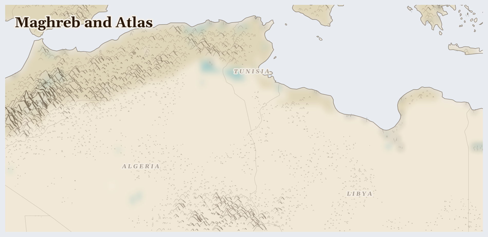

Maghreb and Atlas
Morocco, Libya, Tunisia and 1 more countries
Palearctic
Where Africa meets the Mediterranean Sea: golden cities with tiled fountains, markets full of spices and lanterns, and behind them the Atlas Mountains — high enough to hold snow above the edge of the Sahara desert. You can ski in the morning and reach the desert by evening.
How Life Works Here
Farmers grow oranges, olives, and dates; herders keep goats on the dry hills. Deep in the desert lies a rock called phosphate, which is ground up to make the fertiliser that helps crops grow all over the world — so food on many tables started as stone from here. Many people also travel north to Europe to pick fruit in huge greenhouses.
Amazigh women's argan oil cooperatives (Morocco), Tunisian smallholder olive farmers (Sahel region), Oasis date palm cultivators (Draa-Tafilalet, Tozeur).
6M+ coastal Libyans dependent on piped water for daily survival, Irrigated farm operators along pipeline corridor, fighters groups controlling pipeline sections since 2011 civil …
OCP Group (Moroccan state phosphate enterprise).
What Is Happening
Some of the people who cross the sea to find work are treated unfairly — long days, low pay, far from home. And in the desert, water is running low: some of it is ancient water, pumped up from deep down, that will not be replaced. But people care for one another here: old desert wisdom teaches sharing water with any traveller, and communities are learning new ways to grow food with far less of it.
Something Wonderful
Much of the world's food grows because of fertiliser, and much of that fertiliser begins as rock from this one corner of the desert. A stone from the Sahara helps feed farms on the other side of the planet.
Let's Do Something Together
Cloud Watching for Rain
Lie on your back and watch the clouds. Big puffy clouds might bring rain! Thin wispy clouds usually mean dry weather. In places where it has not rained for a long time, families watch the sky every day and hope for clouds. Imagine waiting and waiting for rain that does not come.
- blanket for lying on
- sky with clouds
For grown-ups
Prolonged drought triggers cascading crises — crop failure, livestock death, water scarcity, displacement. Communities develop sophisticated indigenous weather knowledge that climate change is now invalidating.
Let Us Pray Together
God, send the rain. Be with families who are waiting and hoping.
Leader: We pray for the displaced. For the tens of thousands driven from their homes.
All: Lord, hear our prayer.
Leader: We pray for those living under violence. For communities enduring fighting in this region.
All: Lord, hear our prayer.
Leader: We pray for Libya. Especially for Libya, facing the most severe convergence of crises in this region.
All: Lord, hear our prayer.
Leader: We pray for the helpers. For humanitarian workers and missionaries in Maghreb and Atlas.
All: Lord, hear our prayer.
His foundation is on the holy mountains. The Lord loves the gates of Zion more than all the dwellings of Jacob. Glorious things are spoken of you, Zion, city of our God.
Collect
O God, you declare your almighty power most chiefly in showing mercy and pity: mercifully grant to us such a measure of your grace, that we, running the way of your commandments, may receive your gracious promises, and be made partakers of your heavenly treasure; through Jesus Christ your Son our Lord, who is alive and reigns with you, in the unity of the Holy Spirit, one God, now and for ever.
Amen.
Talk About It
In the desert, you always share water with a traveller, even a stranger — it is one of the oldest rules there is. Who is someone you could share something important with this week?
One Thing We Can Do
Oranges, olives, dates — if any of these are in your kitchen, they may have come from here. Taste one slowly, and thank God for desert farmers and for enough rain.